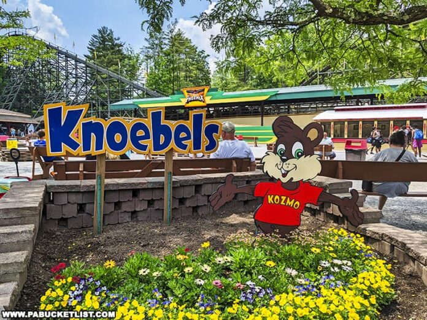
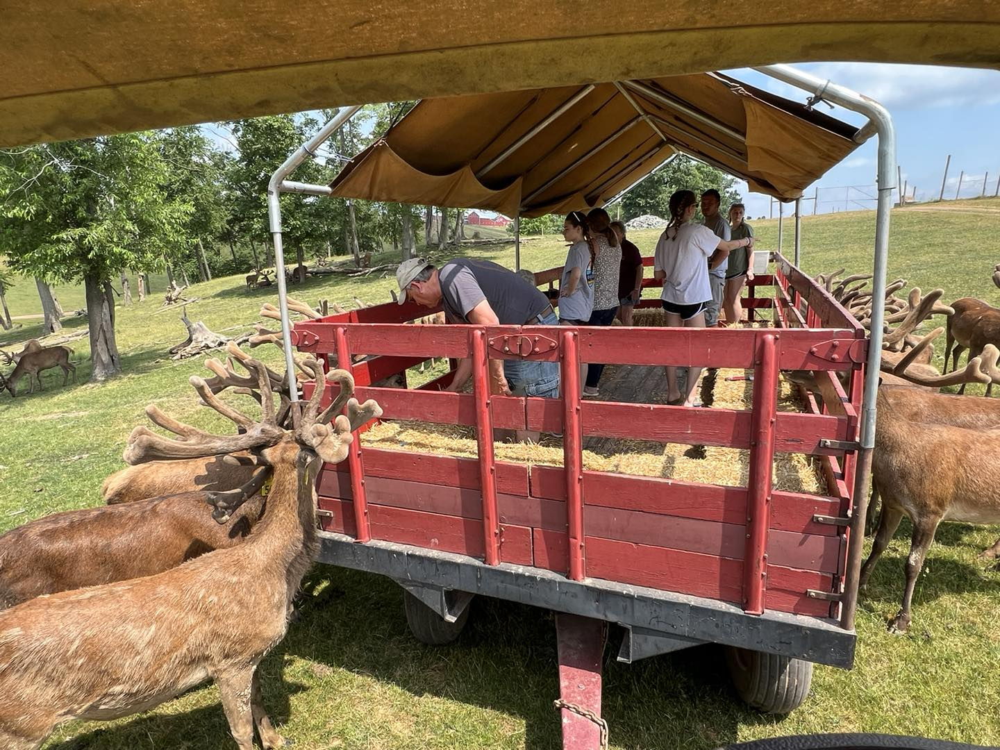

Knoebels is a family-owned, friendly amusement park with rides for everyone, even dogs! It is full of entertainment and games. One unique feature about Knoebels is that they try to save rides that would otherwise be destroyed. Some of my personal favorites are Phoenix and Impulse, which are thrilling rollercoasters. Phoenix has been there since 1985, and the way it’s built, you get some airtime every time the coaster goes over a hill. Impulse is another roller coaster that’s a little newer than the other rides. It was completed in 2015. Now, if you like steep drops, upside-down, and twists, this is the ride for you! This ride is thrilling because on the way up, you feel like you might slip out, but as soon as it gets up over the hill, it goes speeding downward and straight into a loop. I’ve personally made some funny faces which the camera has caught. Sometimes, when the park is about to close, they’ll let you go on rides over and over again without having to go back in the line. Knoebel’s food is so good and inexpensive. Some things that I have tried and enjoyed are the pierogies, dill pickles, edible cookie dough, caramel apples, pizza, water ice, and walking tacos. The food stands can be found throughout the park. Another unique experience at Knoebels is that you can camp in the park. By staying at the park, you can enjoy the neon at night and breakfast in the morning as workers prepare the park. Next to Knoebels is an 18-hole golf course where you can take lessons. Also nearby is Rolling Hills Red Deer Farm, where you take a wagon ride to feed the deer. A trip to Knoebels gives you outdoor thrills and some time by the campfire.